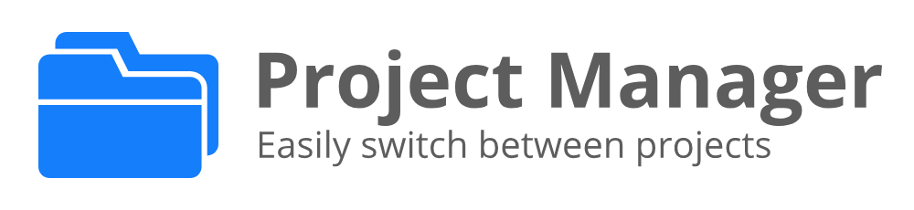
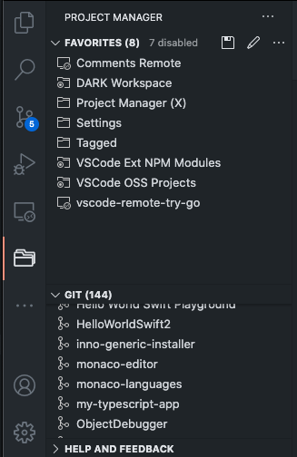
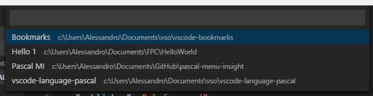
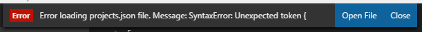
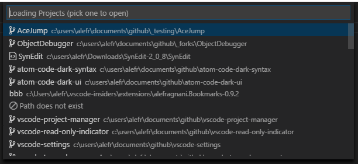

Modern project switching
Improved tags, improved auto-detection, and current-project highlighting keep the extension focused on daily navigation.
Visual Studio Code Extension
Project Manager helps you save favorites, auto-detect repositories, tag work by context, and move between local and remote codebases without losing track of what matters.


What's new in 13.1
Improved tags, improved auto-detection, and current-project highlighting keep the extension focused on daily navigation.
Favorite projects
Project Manager starts with favorites. Save any folder or workspace as a named project, reopen it from the command palette, and keep your most important repos one action away.
Turn the current folder or workspace into a favorite with a suggested name and a lightweight command-driven flow.
Customize names, paths, tags, enabled state, and profiles in the projects file. Home shortcuts like ~ and $home are supported.
Use the project picker to reopen favorites in the current window or a new one, depending on how you want to switch context.


Automatic detection
Project Manager can scan your configured base folders and surface Git, Mercurial, SVN, VS Code, or other folder-based projects automatically. You choose where it looks and how strict it should be.
node_modules, out, or custom matchesLimit recursion depth, skip nested projects, group detected results by type, and keep duplicate project names readable with parent folder hints.

Remote development ready
remote.extensionKind to force workspace-side executionDonate
Project Manager is fully open source again and continues to be maintained as a practical daily tool for Visual Studio Code users.
Use the Visual Studio Code Marketplace to install the extension, then tune its behavior through the standard VS Code settings experience.